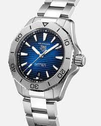

VERSACE
Gianni Versace S.p.A., usualmente llamada Versace, es una casa de moda Italiana, con sede central en la ciudad de Milán, en la región de la Lombardía.
Fundada por Gianni Versace en 1978 y propiedad de Michael Kors. Versace diseña, comercializa y distribuye vestuario, accesorios, fragancias, maquillaje
y muebles de lujo bajo las diversas líneas del Grupo Versace, como: Gianni Versace Couture, Versace Jeans Couture, Versace Home Collection y Versace Collection.
El Departamento de Estilo de Versace cuenta con un grupo de diseñadores y estilistas que trabajan en equipos. Cada equipo está dedicado específicamente a la línea de ropa o a la marca.
Estos equipos operan bajo la atenta supervisión y guía de la directora creativa, Donatella Versace.El 25 de septiembre de 2018, el grupo estadounidense de moda Michael Kors Holdings
oficializó la compra de la casa italiana Versace, valorada en 2,120 millones.
